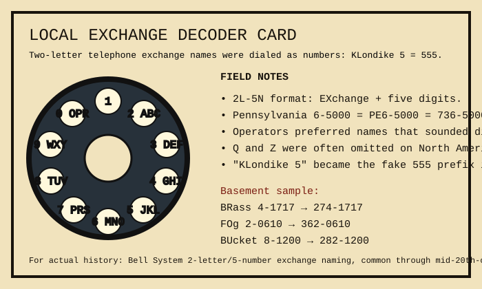

concrete note In the Bell System's 2L-5N format, the first two letters of an exchange name mapped to the first two digits. BUtterfield 8 began 288; ELdorado 5 began 355. This made numbers easier to say aloud and easier to misremember poetically.
| Printed name | Dialed prefix | Why it matters here |
|---|---|---|
| KLondike 5 | 555 | Later became the familiar fictional prefix. |
| BRass 4 | 274 | The brass cricket catalog number hides a phone exchange. |
| FOg 2 | 362 | Lighthouse entries can be filed as calls. |
| BUcket 8 | 282 | Municipal bucket department's unofficial line. |
Try this with the motel directory: room numbers feel less random when treated as switchboard fragments. If a number spells nothing, the operator probably knew better.
Handmade SVG; historical summary based on common North American exchange-name dialing practice.